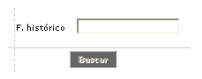
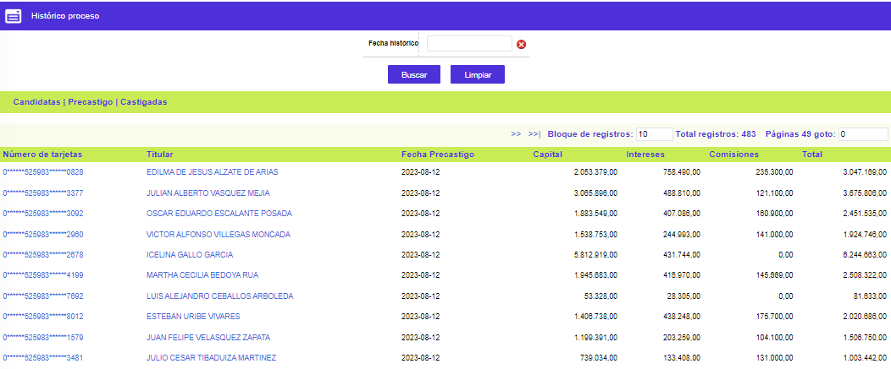

Castigo de cartera
Histórico proceso: Este formulario permite consultar las tarjetas castigadas de la Entidad. El sistema consulta y muestra las tarjetas que no fueron castigadas y que están como histórico, estas son aquellas que se encuentran en tarjetas a castigar con bloqueo de histórico y con fecha de precastigo igual a la que ingresa el usuario en el filtro.
Filtro: El formulario cuenta con un filtro inicial de búsqueda, necesario para la consulta de la información:

Fecha Histórico |
Permite a la entidad consultar a una fecha específica la información correspondiente a los productos que pasaron al proceso de precastigo. |
El formulario contiene las siguientes opciones: Candidatas , Precastigo, y Castigadas.

|
Número de tarjetas |
Presenta los números de cada tarjeta que han cumplido con las condiciones para entrar al proceso de precastigo. |
Titular |
Corresponde al nombre del cliente principal del producto. |
Fecha Precastigo |
Informa la fecha en la que cada tarjeta pasó al proceso de precastigo. |
Capital |
Señala el valor del capital que el cliente trae vencido, el mismo que se considerará en el momento de realizar el castigo de la deuda. |
Intereses |
Registra el valor de los intereses (corrientes y de mora) que el cliente posee como saldo, el mismo que se considerará en el momento de realizar el castigo. |
Comisiones |
Informa el valor de las comisiones (cuotas de manejo y otros valores con ese concepto de transacción) que el cliente posee como saldo, el mismo que se considerará en el momento de realizar el castigo. |
Total |
Campo que muestra la sumatoria consolidada de la deuda (capital más intereses más comisiones) correspondientes al cliente candidato al castigo. |
Candidatas | Precastigadas | Castigadas | Consulta de parámetros